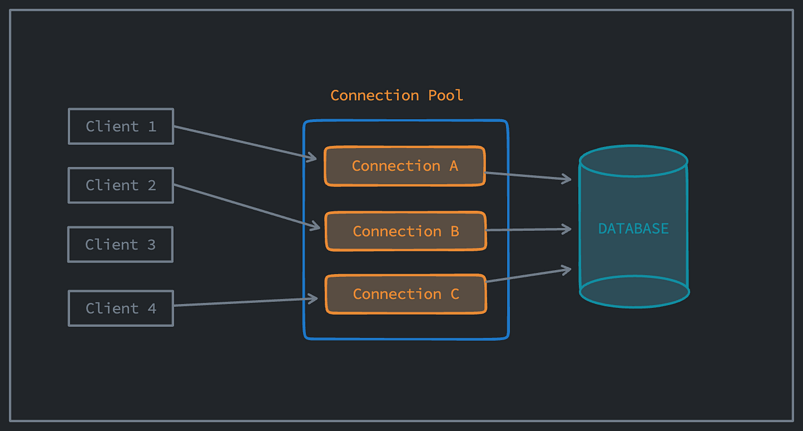
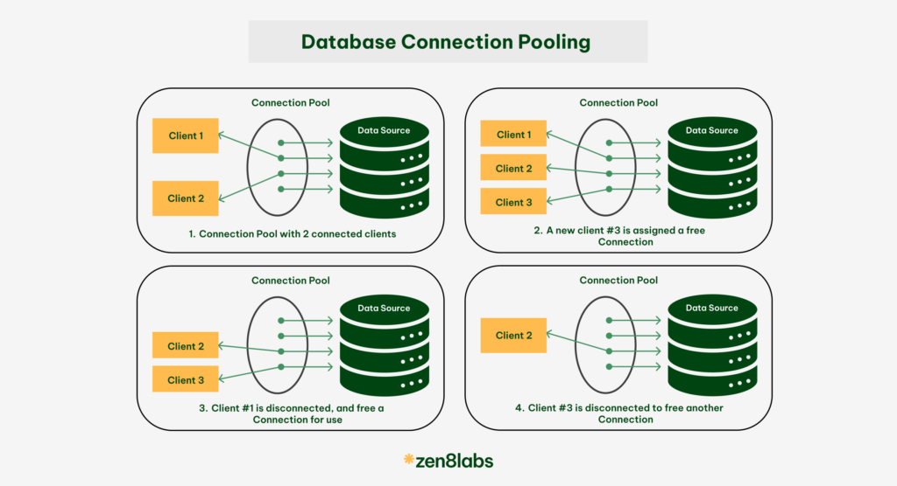

System Design Mastery
Master scalable systems with premium insights
🔗 Connection Pooling — Efficient Database Connection Management
📚 Quick Navigation
1️⃣ What is it?
Connection Pooling is a technique where a system maintains a pool (set) of reusable connections (usually to a database) instead of creating a new connection for every request.
🔄 Instead of:
Creating new connection for request → using server → closing connection every time ❌
✅ We:
Reuse existing connections from a pool ✅

🔄 App → Pool → DB: Connections are created once and reused multiple times
💡 Simple Idea
- App → Pool → DB
- Connections are created once
- Reused multiple times
2️⃣ Why does it exist? (What problem does it solve?)
Creating a database connection is expensive:
- Network setup
- Authentication
- Resource allocation
If every request creates a new connection:
- High latency ❌
- Server overload ❌
✅ Connection pooling solves:
- Faster response time
- Reduced overhead
- Efficient resource usage
3️⃣ What breaks without it?
Without connection pooling:
- Every request opens a new DB connection
- DB gets overloaded
- Increased latency
- System crashes under high traffic
📌 Example:
1000 users → 1000 DB connections → DB failure ❌
4️⃣ How it works
- Pool creates N connections (say 20)
- Incoming Request comes → picks available connection in pool
- Performs DB operation
- Returns connection to pool
- Next request reuses it

📊 Connection pool workflow: request → get connection → use → return
📊 Example
Pool size = 3 (max number of DB connections)
Requests:
- Req1 → Conn1
- Req2 → Conn2
- Req3 → Conn3
- Req4 → waits (no free connection)
If pool is full → requests may wait or fail.
5️⃣ When to use / When NOT to use
✅ When to use:
- Database-heavy applications
- High-traffic systems
Examples:
- E-commerce
- Banking apps
❌ When NOT needed:
- Very small apps
- Low traffic systems
6️⃣ One common mistake
🚨 Pool size misconfiguration
- Too small → requests wait (slow system)
- Too large → DB overload
👉 Must tune based on:
- DB capacity
- Traffic load
7️⃣ Real app connection
🛒 E-commerce
- Thousands of users browsing products
- Connection pool prevents DB overload
💳 Banking System
- Frequent transactions
- Pool ensures fast DB access
8️⃣ Why not create unlimited connections?
Because:
- DB has connection limits
- Memory usage increases
- Context switching overhead
- Performance degradation
👉 Pooling ensures controlled usage
9️⃣ Real Tools
☕ HikariCP (Java)
Fast, reliable, most popular
🔧 Apache DBCP
Apache Commons Database Connection Pooling
🐘 PgBouncer (PostgreSQL)
Lightweight connection pooler for PostgreSQL
🐬 MySQL Connection Pooling
Built-in connection pooling support
🎯 Interview-ready One-liner
Connection pooling is a technique of reusing a fixed number of database connections to reduce overhead and improve performance in high-traffic systems.
🧠 Summary
- Connection pooling maintains a set of reusable database connections instead of creating new ones per request.
- It reduces latency and prevents database overload in high-traffic systems.
- Proper tuning of pool size is critical for optimal performance.